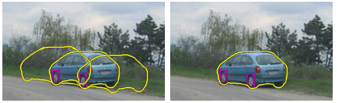

I spent a lot of last week studying for a quiz/test for one of my classes. After that, it was a lot of logistical stuff with setting up for this project, including meeting with my group members, (trying to) set up Docker, familiarizing myself with Flask, React, and npm (a package manager for JavaScript).
As I mentioned earlier, I need to figure out what all these tools are! I didn't expect to get swamped by things like that, but every single one of them so far seems very useful and powerful, so I'm excited to see what I can do with them.
Work on this project all week, really. This is going to be pretty time consuming. There is also a deceptive amount of writing to do (regular writing, not code writing) with the technical report and the API documentation on GitBook. Those parts got assigned to me, so I have to get those taken care of before Thursday.
I am really enjoying it so far. It's tough. Really tough. But hopefully my group members and I can put together a project we can be proud of by the end of the semester. That will make all this work worthwhile.
My pick of the week this week once again comes from my Computer Vision class. This week, we're looking at the Hough transform in-depth video on the process (medium-length). You don't really need to watch the video, but the high-level idea of the Hough transform is that it is a method used to "fit" objects in an image.  For example, if we have an image of a classroom, we can create a model of what a laptop looks like and use the Hough transform to find all the laptops in the image. It is a really powerful technique that relies on a method called voting--essentially, we run an edge detector on an image, getting a bunch of edge points. Then, each edge point "votes" for which models it could potentially be a part of (to make this simpler, imagine that we are trying to find circles in an image. Each edge point votes for 3 values--the x-coordinate of the circle's center, the y-coordinate of the circle's center, and the radius length). Once we have these votes, we can look at which values have the most votes and conclude that they must fit our model. If this explanation didn't make sense, let me know! I'm always trying to increase clarity in my explanatory writing, so I'd be happy to break it down further.